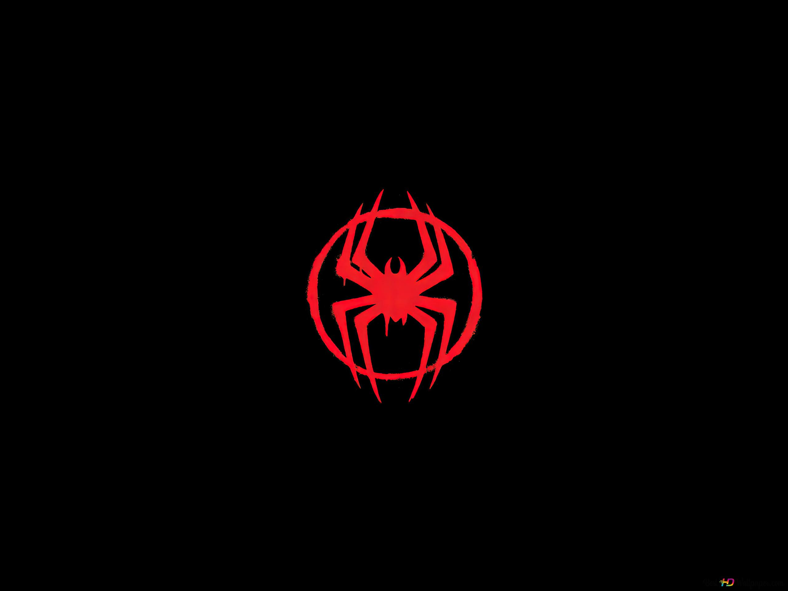

Sobre mim
Me chamo Yann Gabriel,
moro no Estado de São Paulo
e sou apaixoando por programação desde
meus 6 anos de idade!

Essa história toda se iniciou quando
eu visitava meu avô,
sempre jogavamos juntos e,
desde lá, criei minha paixão em programar, seja
um site, jogo ou aplicativo!
Meus projetos:
Trabalhei em diversos projetos de autoria própria,
cada um que contém sua peculhariedade e seu jeito único!
Confira alguns dos projetos abaixo:
Tela de Login
Reproduzi uma tela de login sem a utilização de um banco de dados, ondde nela há o cadastro de uma empresa fictícia.
Esse projeto foi feito com o intuito de personalizar um local onde o úsuario pode acessar, a página foi produzida com HTML e CSS somente.
Culinária Mista
Nesse projeto procurei fazer a criação de um cardápio de restaurante interativo, onde o usuario se encontra com um menu divertido e harmonico.
Site feito inteiramente com CSS e HTML, focado em estilização e interação.
The Las of Us
Fiz esse site sobre um dos meu jogos favoritos, onde nele testei de forma mais aplicada a colocação de vídeos e também foi meu primeiro dite "onlypage" que fiz.
Site feito com CSS e HTML, com as escritas sendo de punho próprio.